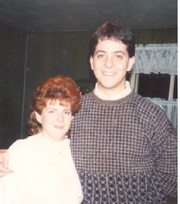

The Hoey Family Genealogy
Home
Irish Roots
Metzenseifen Roots
Italian Roots
German Roots
Mysteries
Stories and Other Stuff
Photo Album
Contact
What's New
Acknowledgements
Site Map
Site Search
Photo Album

Me and my wife, Lisa - 1990
James Hoey in China, 1901
Rose (Quinn) Hoey and Family, ca. 1905
James in his police uniform, ca 1906
Mary Donahue, ca. 1910
James and Mary Hoey, ca. 1915
My father with his sisters, 1934
Mary (L) and Ann Donahue with their parents, ca. 1938
James being sworn in as Superintendent of County Police
James Hoey, date unknown
Hoey Family, ca. 1938
China Relief Expedition Medal
My mother and father on their wedding day, 1956
Jewell Stark, 1907
Louis and Pauline (Stark) Weet, late 1920's
Jewell Stark, 1930
Herbert and Jewell Weet on their wedding day, 1931
My mother (front) with her brothers and sisters, 1941
Herbert and Jewell Weet home in Brookline
The Family of Wendelin Kund and Agnes Gedeon Kund, 1920
John and Catherine (Weet) Orient on their wedding day
The Weet Pickle Company on McNeilly Road
The Orient Children, 1937
Weet/Orient Family Reunion, 1981
John and Mary (Stark) Gedeon with their sons, ca. 1900
One branch of the Eiben Family, ca. 1912
The Kramer Family, ca. 1910
The Family of Louis Gaspar and Agnes Stark Gaspar
John Stroempl and Theresa Stark Wedding - 1902
The town of Campolieto
Pasquale Ialenti
Anna and Philomena Ialenti
Margaret Strazza, 1910
Strazza home on Mt. Washington
Phillip and Margaret Ialenti on their wedding day, 1910
Phillip Ialenti's Farm
Ialenti Family, 1918
Vince, John, Al and Phil Yalenty
Margaret (Strazza) Yalenty with sons John and Phil, 1946
Yalenty Family Reunion, ca. 1980
The Brickner home in Germany
Gottholdt and Rosine Donet with grandkids, ca. 1920
Leonard Weiss in uniform
The Zoerb Children, ca. 1924
Alfred Donet with the crew of his B-17
Previous
Start
Next